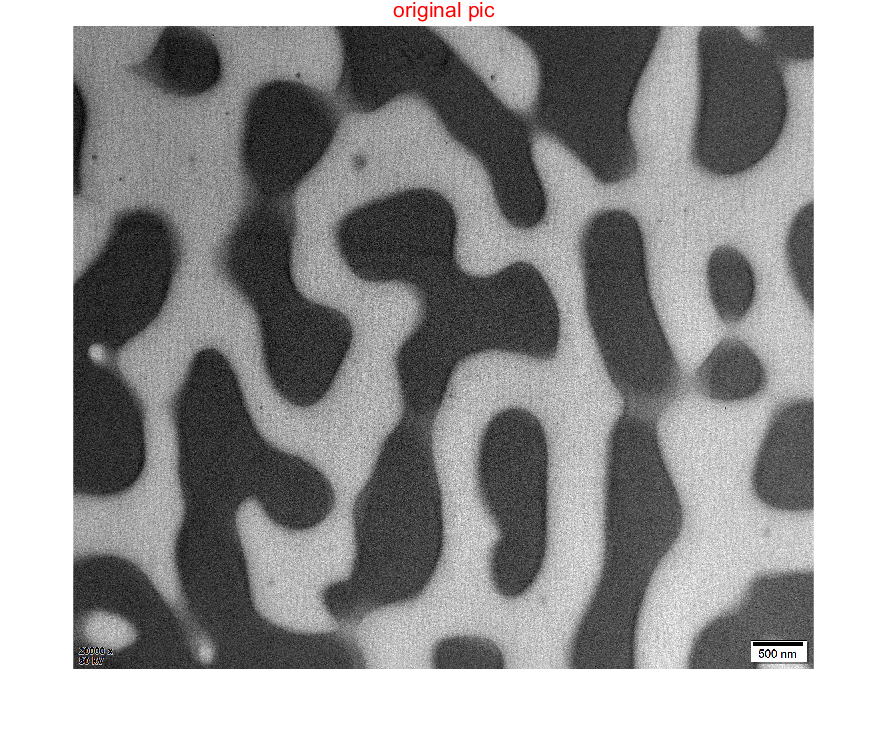
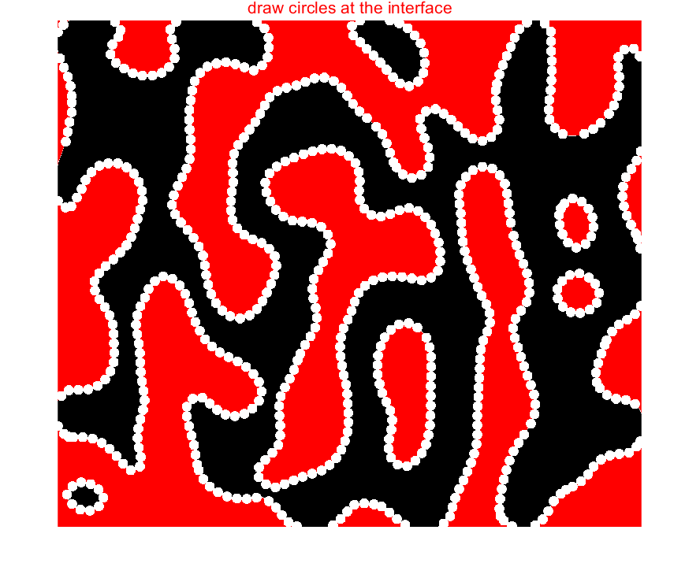
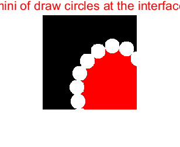
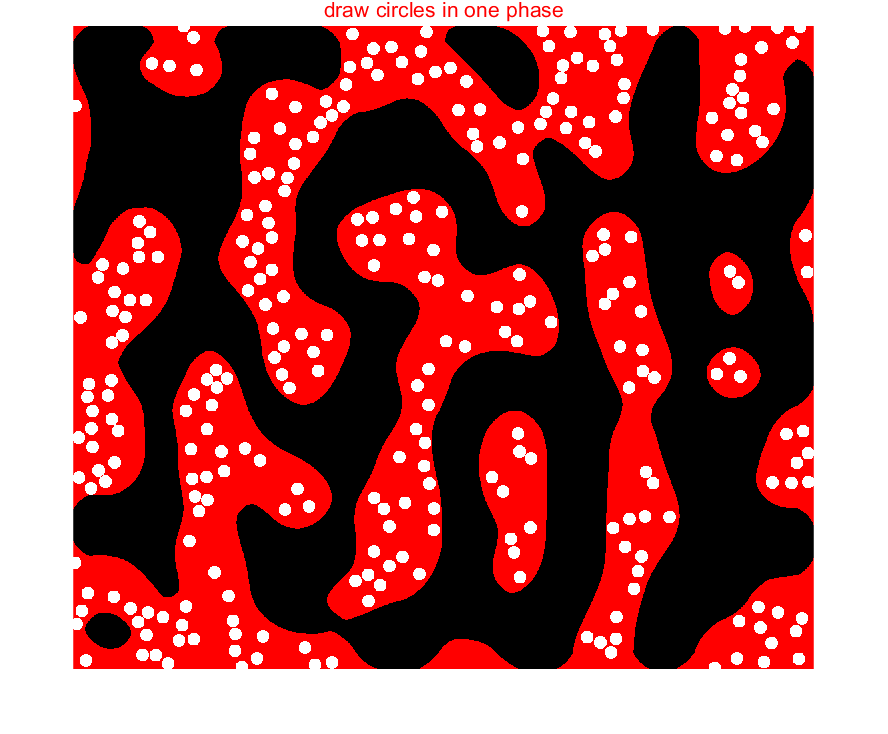
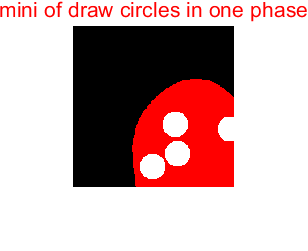

I=imread('TEM.tif'); figure;imshow(I)
title('original pic','color','r','FontSize',16)
BG=imopen(I,strel('disk',15));
level=graythresh(BG);
bw=im2bw(BG,level);
kernel = 80;
bw= medfilt2(bw,[kernel ,kernel ]);
a=[];a0=0;
[r,c] = size(bw);
image = ones(r,c,3);
for i = 1:r
for j = 1:c
if bw(i,j) == 0
image(i,j,1) = 255;
image(i,j,2) = 0;
image(i,j,3) = 0;
end
if bw(i,j) == 1
image(i,j,1) = 0;
image(i,j,2) = 0;
image(i,j,3) = 0;
end
end
end
figure
imshow(image);
lunkuo=zeros(r,c);
for i = 1:r
for j = 1:(c-1)
if (bw(i,j)+bw(i,j+1))==1
lunkuo(i,j) = 255;
a0=a0+1;
a(a0,1)=i;
a(a0,2)=j;
end
end
end
for j = 1:c
for i = 1:(r-1)
if (bw(i,j)+bw(i+1,j))==1
lunkuo(i,j) = 255;
a0=a0+1;
a(a0,1)=i;
a(a0,2)=j;
end
end
end
imshow(lunkuo);
luokuo1=lunkuo;
imshow(luokuo1);
for j=1:500
x=floor(24181*rand)+1;
m1=a(x,1);
n1=a(x,2);
if luokuo1(m1,n1)==254
continue
end
for i=1:300
w=0;
for m= max(1,(m1-32)):min(1608,(m1+32))
for n=max(1,(n1-32)):min(1852,(n1+32))
if ( (m-m1)^2+(n-n1)^2 ) < 256
luokuo1(m,n)=254;
end
if w==0
if floor( ( (m-m1)^2+(n-n1)^2 )^0.5 /2 )== 15 && lunkuo(m,n)==255
if luokuo1(m,n)~=254
w=w+1;
m0=m;
n0=n;
end
end
end
end
end
m1=m0;
n1=n0;
end
end
diejia=luokuo1+image;
imshow(diejia);
A=diejia;
imshow(A);
title('draw circles at the interface','color','r','FontSize',16)
imwrite(A,'interface.bmp','bmp');
C=A(400:600,1200:1400,:);
figure
imshow(C);
title('mini of draw circles at the interface','color','r','FontSize',16)
imwrite(C,'littleinterface.bmp','bmp');
luokuo2=zeros(r,c);
luokuo3=zeros(r,c);
for i=1:1400
x=floor(1608*rand)+1;
y=floor(1852*rand)+1;
if luokuo3(x,y)==254
continue
end
w=0;
for m= max(1,(x-16)):min(1608,(x+16))
for n=max(1,(y-16)):min(1852,(y+16))
if bw(m,n)~= 0
w=1;
continue
end
end
end
if w==0
for m= max(1,(x-32)):min(1608,(x+32))
for n=max(1,(y-32)):min(1852,(y+32))
if ( (m-x)^2+(n-y)^2 ) < 256
luokuo2(m,n)=254;
end
if ( (m-x)^2+(n-y)^2 ) < 1024
luokuo3(m,n)=254;
end
end
end
end
end
diejia2=luokuo2+image;
figure
imshow(diejia2);
A1=diejia2;
imshow(A1);
title('draw circles in one phase','color','r','FontSize',16)
imwrite(A1,'matrix.bmp','bmp');
C1=A1(400:600,1200:1400,:);
figure
imshow(C1);
title('mini of draw circles in one phase','color','r','FontSize',16)
imwrite(C1,'littlematrix.bmp','bmp');
警告: 图像太大，无法在屏幕上显示；将以 50% 显示
警告: 图像太大，无法在屏幕上显示；将以 50% 显示
警告: 图像太大，无法在屏幕上显示；将以 50% 显示
警告: 图像太大，无法在屏幕上显示；将以 50% 显示
警告: 图像太大，无法在屏幕上显示；将以 50% 显示
警告: 图像太大，无法在屏幕上显示；将以 50% 显示
警告: 图像太大，无法在屏幕上显示；将以 50% 显示
警告: 图像太大，无法在屏幕上显示；将以 50% 显示
    